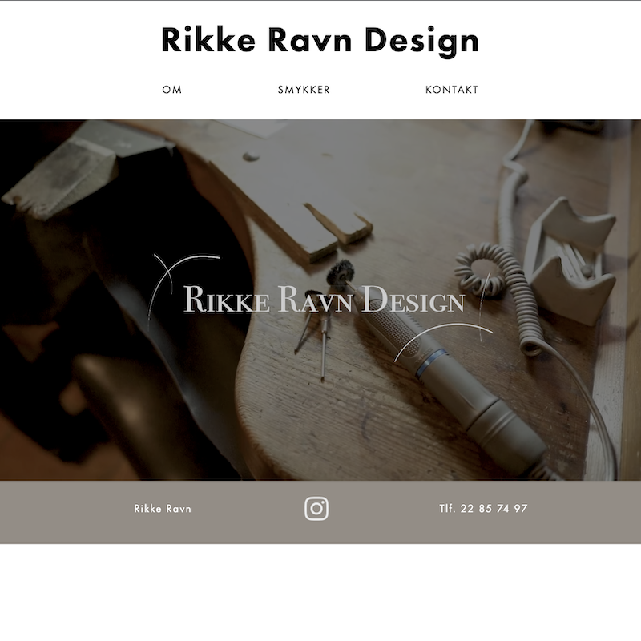
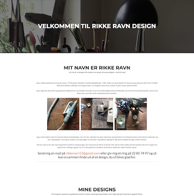
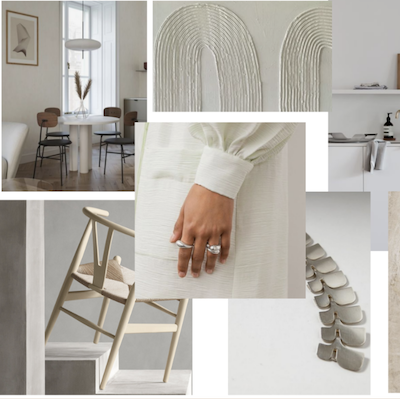
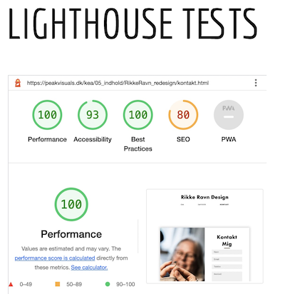
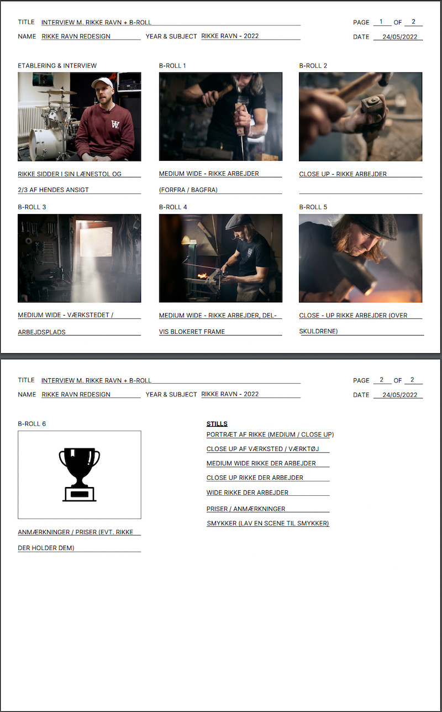
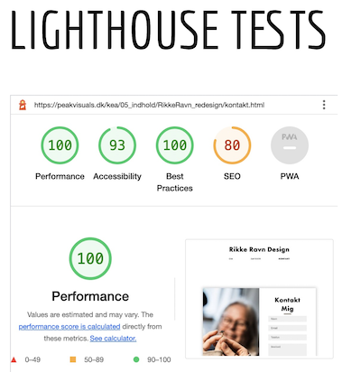
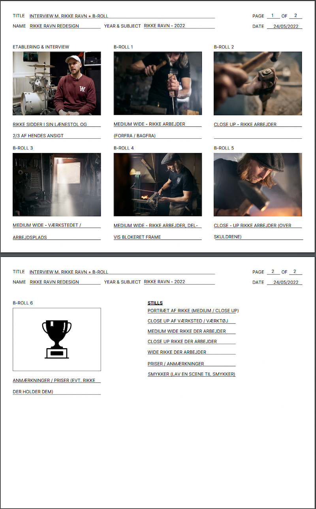
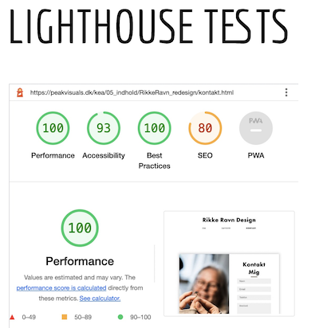
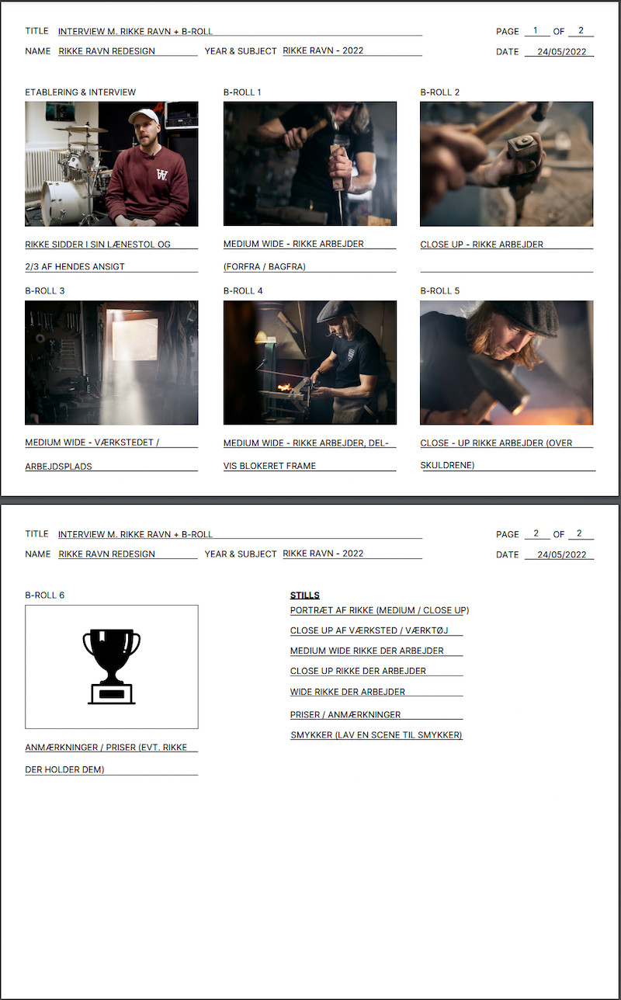

05 - Indhold
På dette tema var vores mål at lave et redesign for en selvvalgt virksomhed, for en forbedret brugeroplevelse. Min rolle var som scrum master at holde styr på min gruppes fremskridt, og sikre vi mødte vores egne deadlines. Vi brugte vores tidligere erfaringer til dette. Mere specifikt brugte vi 5-sek test, heuristisk test og BERT test før og efter, for at finde ud af, om vi havde lavet et forbedret site.



 






Det lærte mig
Vigtigheden i at bruge f.eks. BERT-testen til at udvikle sit projekt og se om det lever op til egne forventninger. Det har lært mig brugen af den heuristiske test for at sikre bedst mulig funktionalitet gennem peer review.